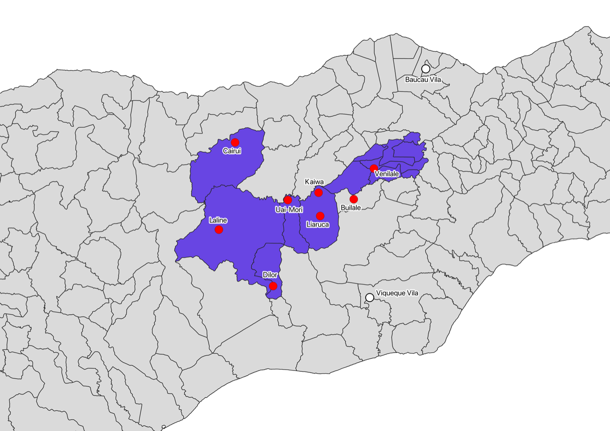
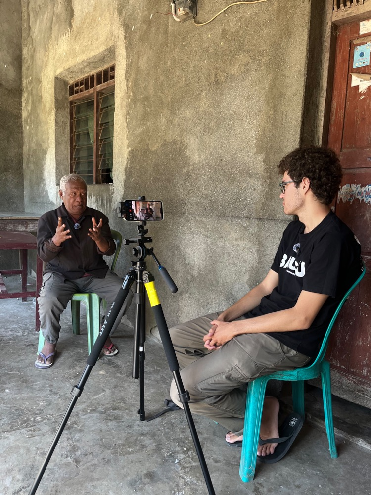
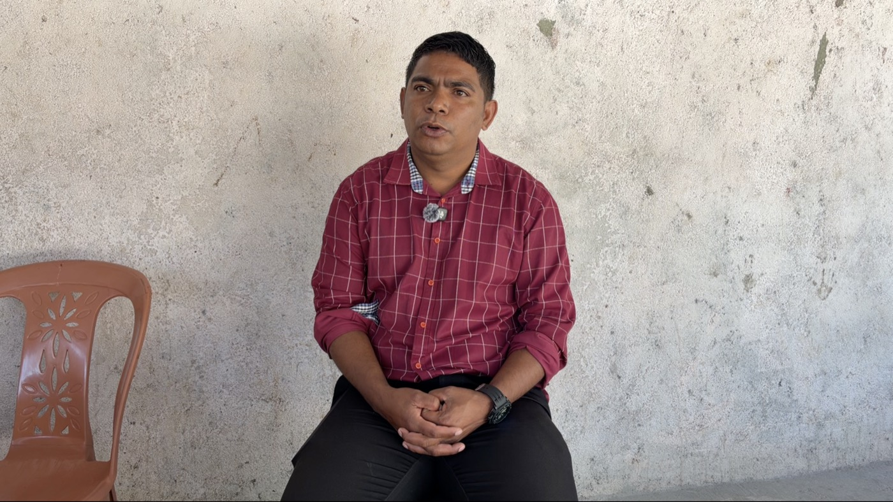
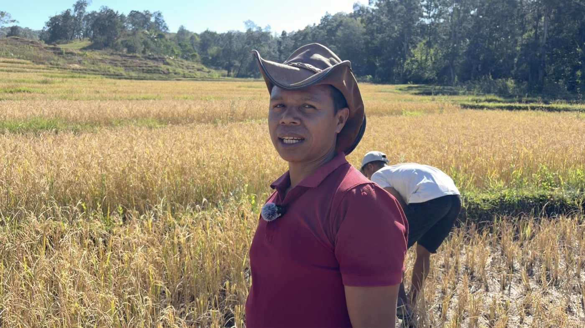
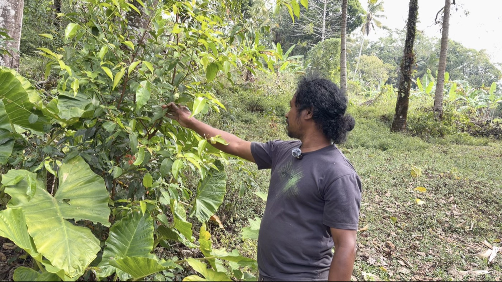
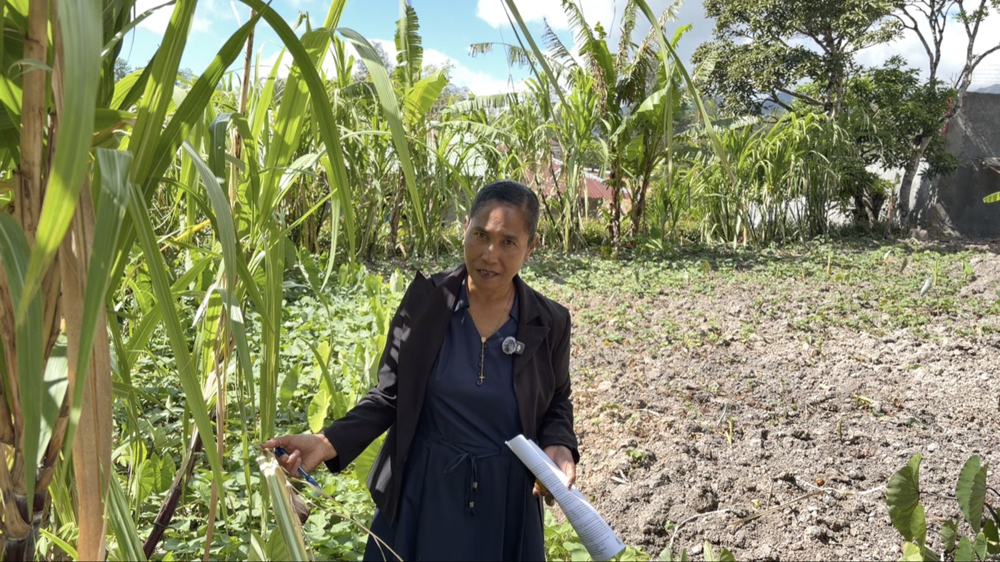

Fieldwork & MediaPeskiza iha terenu no Media
Photos, recordings, and maps from fieldwork in Venilale Administrative Post, Timor-Leste. Foto sira, gravasaun sira, i mapa sira husi peskiza iha terenu iha Postu Administrativu Venilale, Timor-Leste.

Location of Venilale in Timor-LesteVenilale nia fatin iha mapa
PhotosFoto sira




